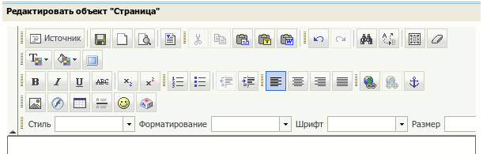

Визуальный текстовый редактор (WYSIWYG)
Содержание
- Описание — Краткое описание всех функций редактора
- Форматирование текста — Форматирование текста определяет, как ваш текст будет выглядеть в вашем документе.
- Списки — Создание нумерованных и маркированных списков
- Ссылки — Создание ссылок и якорей
- Изображения — Работа с изображениями
- Таблицы — Создание таблиц
- Буфер обмена — Вырезать, копировать, вставить
- Источник — Редактирование html-кода страницы
